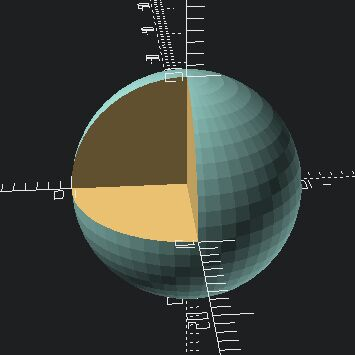

openscad
OpenSCAD is a parametric 3D computer-aided design software. It uses code to generate 3D models. I used it to design my wordblitz-plotter and P.O.K.E.D.

$fn=50;
module thingy(){
difference(){
sphere(10);
cube([10, 10, 10]);
}
}
thingy();
Ressources
- OpenSCAD cheatsheet
- NopSCADlib: a library of parts for OpenSCAD